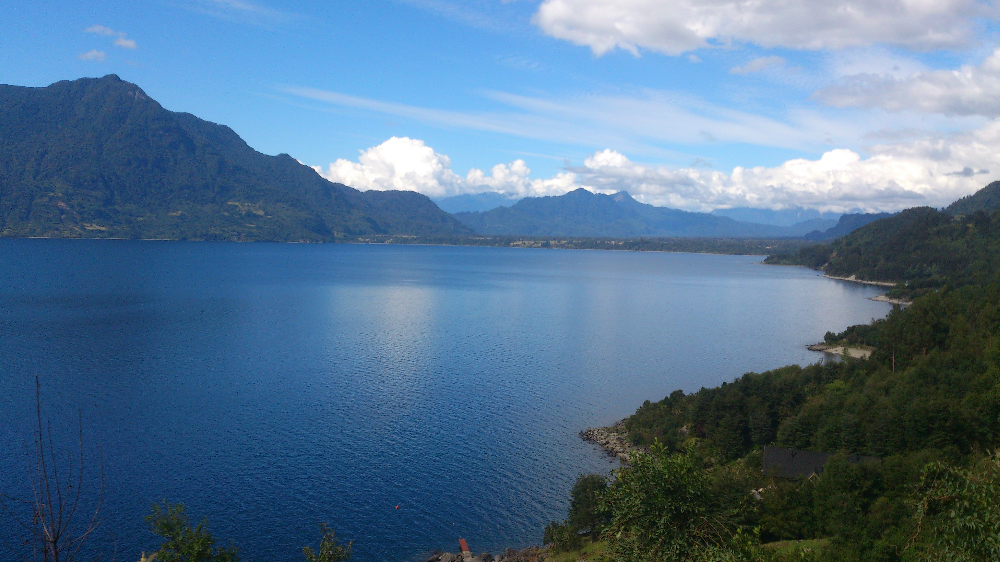
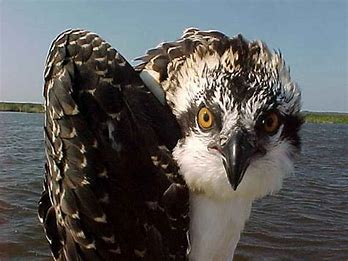
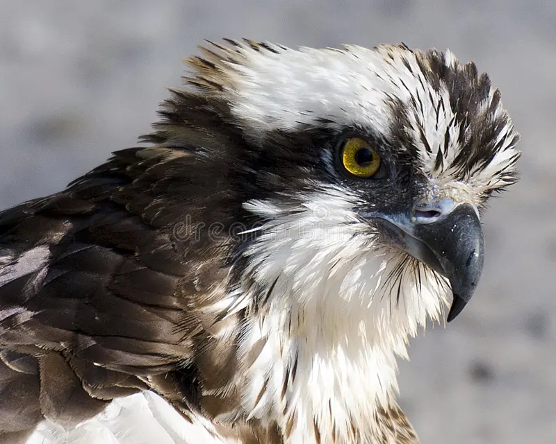
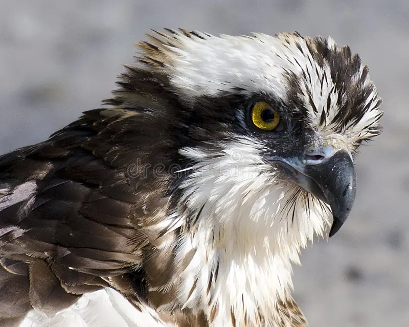

Águila Pescadora
Nombre en Español recomendado por la S.E.O: Águila Pescadora
4 subespecies reconocidas; 1 en Chile
4 subespecies reconocidas; 1 en Chile
Pandion haliaetus carolinensis ( Linnaeus, 1758 )
Osprey
Nombre(s) Local(es):
Distribucion en Chile:
Visitante escaso durante el verano austral, observado entre Arica y Valdivia
Habitat:
Costas, rios, lagos y lagunas.

Descripcion:

Adulto: Cabeza, cuello, pecho y abdómen blancos. Corona con rayas oscuras. Linea gruesa negra, semejante a un antifaz, entre el ojo y la nuca. Dorso café oscuro, con marginaciones blancas. Cola café oscura con barras oscuras. Pico oscuro. Patas grisáceas.
Inmaduro: Más oscuros por encima. Blanco más sucio por debajo.
 
